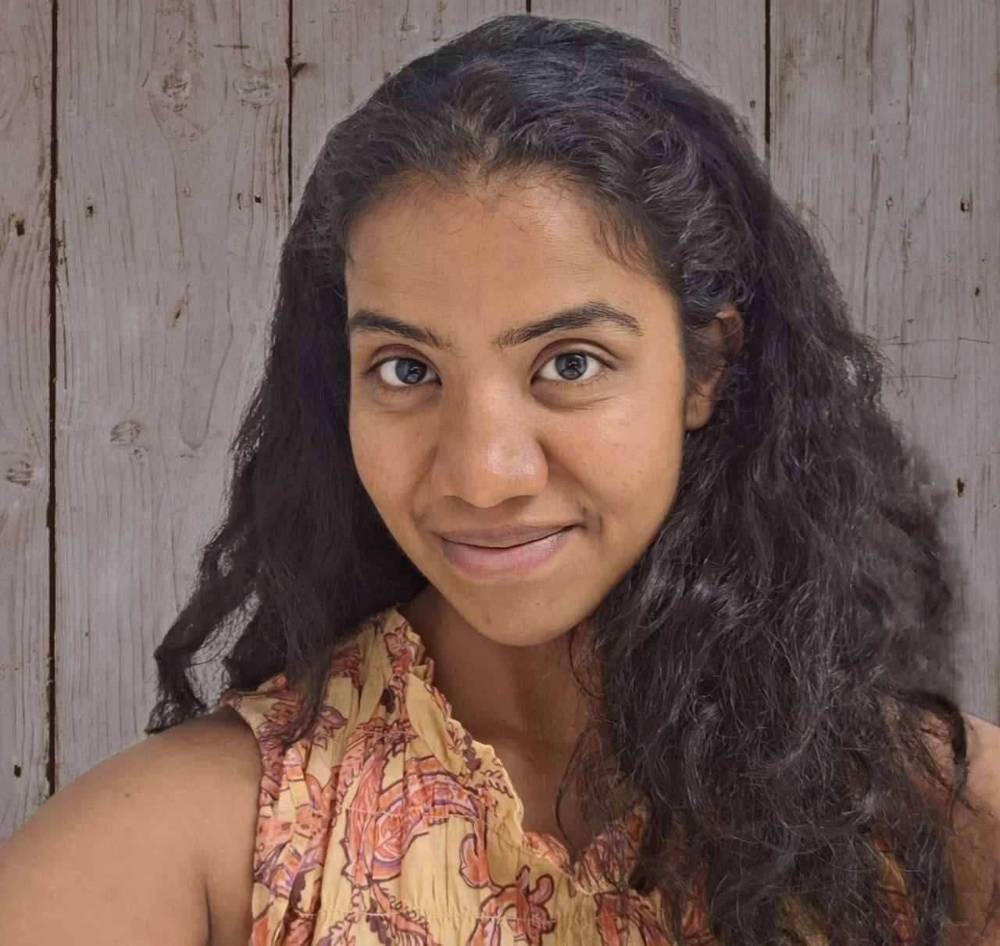

|
I am a Masters student in the Robotics Engineering program at Worcester Polytechnic Institute (WPI). My research focuses on Visual Perception and Path Planning of Mobile Robots in Confined Spaces. Currently, I'm exploring applications of diffusion models in world foundation models for advancing robotics capabilities. I have a strong background in algorithmic efficiency and mathematical foundations, demonstrated through logic optimization and CUDA acceleration. |
 |
{kind=link}
|
|
January 2024 – December 2024
Deep Learning-Based Visual Feature Tracking System (Mentor: Prof. Berk Calli):
- Developed Graph Convolution Network (GCN), attaining MSE loss less than 0.4 in robot joint estimation despite visual obstructions
- Accelerated joint estimation training, cutting time from 5 hours to 15 minutes per iteration
- Adopted a hybrid UKF-GCN approach for robust tracking during occlusions
Multi-Agent Localization (Mentor: Prof. Siavash Farzan):
- Implemented distributed EKF with Voronoi Tessellation system for warehouse automation
- Developed multi-robot coordination achieving mean localization error ≤ 0.8
March 2024 – April 2024
Investigated forward/inverse kinematics for a surgical snake robot to enable precise 3D navigation and control during heart procedures.
|
|
November 2021 – June 2022
Directed peers in reengineering OpenCV core algorithms into warp-optimized CUDA kernels for resource-constrained SoC devices.
Optimized GPU memory through shared and coalesced memory pattern, reducing memory bandwidth by 20% for embedded systems.

May 2016 – April 2020
Medical Image Segmentation:
Implemented hierarchical CNN with cascaded feature pyramids and dense connectivity, achieving 96.9% dice score in lesion segmentation.
Attendance Tracking with Facial Recognition:
Enhanced face detection pipeline achieving 96% accuracy in department-wide attendance monitoring system.
Medical Text Summarization:
Engineered LSTM architecture with clinical embeddings and self-attention, delivering 85% precision in ICD code classification.
|
|
|
Source code and style cloned from Jon Barron's website |